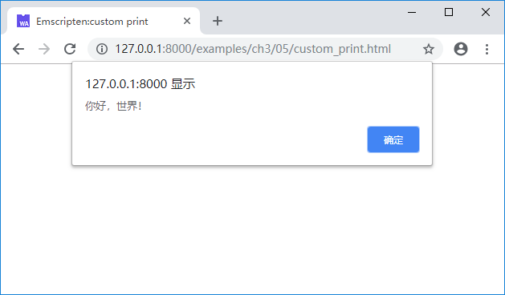

3.5 Module定制及其他
JavaScript对象Module控制了运行时相关的很多行为。在之前的章节中，我们尝试了：
- 使用
Module.onRuntimeInitialized回调在运行时准备就绪后执行测试代码。 - 通过更改
Module.TOTAL_MEMORY设置内存容量。
我们可以使用类似的方法更改Module的标准输出行为，例如：
<!--custom_print.html-->
<script>
Module = {};
Module.print = function(e) {
alert(e);
}
</script>
<script src="hello.js"></script>
上述代码将Module.print的更改为使用alert()函数弹出提示框，上述页面载入1.2节的helloworld例程的.js文件后，输出如下：

除此之外，Module对象中提供了Module.arguments、Module.onAbort、Module.noInitialRun等一系列可自定义的对象/方法，具体使用详见Emscripten官方文档https://kripken.github.io/emscripten-site/docs/api_reference/module.html。
在某些情况下，我们希望在Emscripten生成的.js胶水代码的前后分别插入一些自定义代码（比如在其前部插入C/C++代码将要调用的JavaScript方法、设置Module自定义参数等），此时可以使用两个特殊的编译参数：--pre-js <file>与--post-js <file>。
例如hello.cc如下：
//hello.cc
#include <stdio.h>
int main() {
printf("你好，世界！\n");
return 0;
}
pre.js如下：
//pre.js
Module = {};
Module.print = function(e) {
console.log('pre.js: ', e);
}
post.js如下：
//post.js
console.log('post.js');
使用下列命令编译：
emcc hello.cc --pre-js pre.js --post-js post.js -o pre_hello_post.js
生成的pre_hello_post.js部分内容截取如下：
...
// --pre-jses are emitted after the Module integration code, so that they can
// refer to Module (if they choose; they can also define Module)
Module = {};
Module.print = function(e) {
console.log('pre.js: ', e);
}
// Sometimes an existing Module object exists with properties
// meant to overwrite the default module functionality. Here
// we collect those properties and reapply _after_ we configure
// the current environment's defaults to avoid having to be so
// defensive during initialization.
var moduleOverrides = {};
...
run();
// {{POST_RUN_ADDITIONS}}
// {{MODULE_ADDITIONS}}
console.log('post.js');
可见其中将包含三个部分：
pre.js中的内容；hello.cc编译后产生的.js文件中的内容；post.js中的内容。
上述页面运行后输出如下：
tips 注意控制台先输出了“post.js”，因为wasm模块是异步加载的。